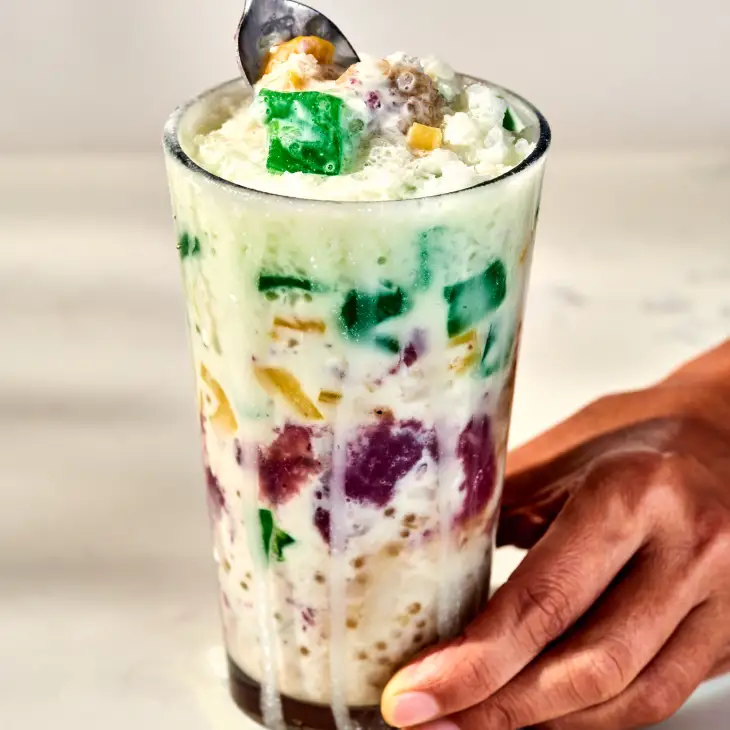

Halo-Halo

Description
The words “halo-halo” translate to “mix-mix” because before you eat the treat, you mix everything up. This Filipino shaved ice dessert is layered with coconut, jackfruit, sweetened bananas, tapioca, nata de coco, and a scoop of coconut or ube ice cream.
Link to Original Recipe
Ingredients
- Minatamis na saging (bananas in syrup): Razon’s of Guagua, a popular Filipino restaurant chain and halo-halo maker, makes their halo-halo with minatamis na saging, which are saba bananas cooked in a caramel syrup.
- Macapuno: Also known as gelatinous mutant coconut, macapuno is chewy, soft coconut meat with a jelly-like texture. It adds coconut flavor and coconut texture to the dessert.
- Milk mixture: In my recipe, I bring in the flavors of leche flan by using a milk mixture made of coconut milk, evaporated milk, and sweetened condensed milk.
- Ube halaya: Some versions of halo-halo will include ube, or purple yam, whether that’s in ice cream form or by using ube halaya (purple yam jam). Ube is a popular ingredient in Filipino desserts.
- Jackfruit: Jackfruit (nangka in Tagalog) is a fruit native to South Asia that can be eaten in both unripened and ripened form.
- Nata de coco: This coconut water gel has a firm gelatinous texture that I love. It is sometimes scented with flavors or food coloring.
Steps
- Grind ice into a cup. The finer the better. Fill partially to allow room for filling.
- Pour evaporated milk into the ice and add a portion of the other ingredients with it.
- Repeat previous steps until container is full.